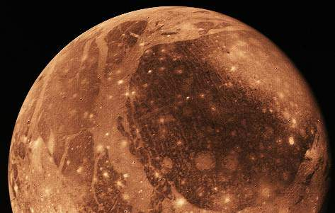

Знайомство із Сонячною системою

Сонце

Меркурій

Венера

Земля

Марс

Юпітер

Сатурн

Уран

Нептун

Плутон
На головна
Юпітер
Юпітер був головним богом стародавніх римлян. Відстань до Сонця — 777,6 млн. кілометрів.
Це найбільша планета в нашій Сонячної системі, її маса в 300 разів більша земної. Така кількість маси означає величезну гравітаційну силу. Це дозволяє Юпітеру мати, у крайньому випадку, 16 супутників. Вона має також невеликі набори кілець.
Космічні зонди почали вивчення Юпітера в 1972 році. Після проходження астероїдного пояса, зонди відправили на Землю зображення кулі, що обертається, з рідкого водню, оточеної атмосферою, що складається в основному з метану і аміаку.
Температура у твердому ядрі Юпітера — +30 500 °С. Але на рівні хмар температура всього лиш 160 °С. Дані з Юпітера засвідчують те, що там постійний шторм, який бачимо на фотографіях як червону пляму. Хмари, що обертаються, оточують Велику червону пляму, таку довгу і широку, як три Землі.
День на Юпітері дещо менший 10 годин. Проте цій планеті потрібно майже 12 земних років, щоб пройти по своїх орбіті навколо Сонця.
Супутники Юпітера
Чотири найбільші супутники Юпітера, що називаються супутниками Галілея, вперше відкриті вченим у 1620 році. На відміну від Юпітера вони тверді: з льоду з камінням або з розплавленого каменю і вулканів. Ганімед — найбільший супутник у Сонячній системі, такого ж розміру, як Меркурій. Найменший супутник — Європа — вкритий замерзлою водою. Біологи вважають, що в морях під льодами можуть існувати деякі форми життя.
Навколо Юпітера рухаються також скупчення темних і світлих хмар із аміаку і кришталиків води. Космічний корабель «Вояджер» надіслав фотографії двох кілець пилу, що оточують планету. Невідомо, з чого складаються ці скупчення — з уламків давніх зіткнень чи це просто частки і камені, притягнуті гравітаційною силою Юпітера.